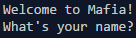
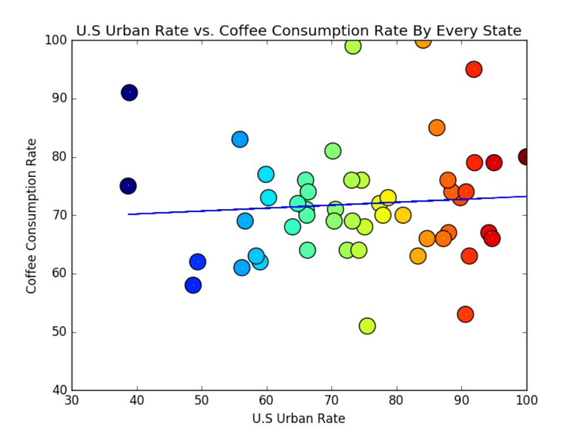
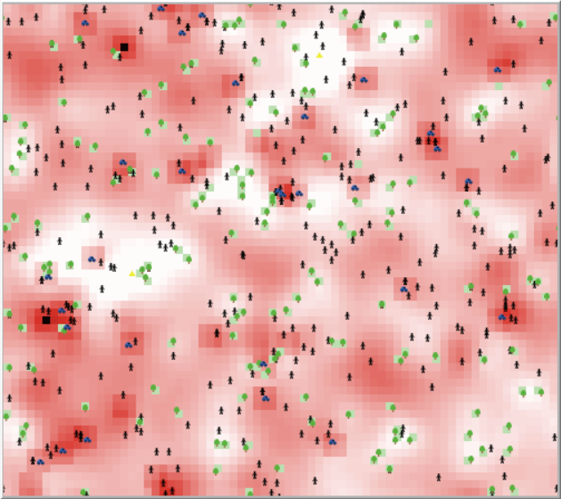

Using the Scratch website, I was able to complete this CSE activity! The goal of this activity was to familiarize beginners such as I with Scratch interface. Click on the image to view it!

I made another project using the scratch website. It is based on the 'game' theme. Click on the image to view it!
BACKLOG Using the website repl.it, my partner and I were able to make a simple game based off of the card game 'Mafia.' Click on the image to play it!
Harnessing the unlimited power of the program Canopy, my partner and I were able to create a rainbow-colored statistical extravaganza. Our objective was to create a visual representation of a prompt that was randomly assigned to us. From this assignment, I have learned to value and regard of visual data representation with importance. Click of the picture to download the .zip file! HOWEVER, make sure that you have Canopy installed on your computer to run the program!
This project was created through the program known as Netlogo. With Netlogo, my partner and I improved a simple simulation on pollution. From weakening trees to spawning cars, our changes were quite numerous and achieved the goal of creating a more accurate simulation of pollution. If you're interested, click on the image to download the .zip file that consists of the Netlogo simulation and all of our research and presentation files. HOWEVER, make sure that you have at least Netlogo 5.3.1 installed on your computer!